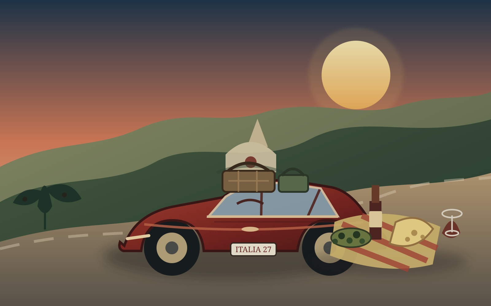

LA STRADA
ITALY · JULY 2027
Rome to southern Italy and back
Compare the mountain-and-Adriatic route, the straight-south route and the slower hill-country route before W, N and L choose together.
Welcome to La Strada
Your choice is remembered on this device.